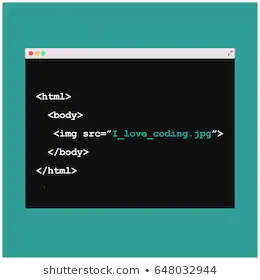

DIV pielietojums

Div tiek izmantots, lai kaut ko sāktu jaunā rindā un izstiepj vai samazina tā, lai tas izmantotu visu iespējamo platumu.
To izmanto arī, lai savilktu vairākas darbības vienā blokā.
Piemēram, lai izveidotu kādu teksta kastīti ar citas krāsas fonu.
Span pielietojums
Span tiek izmantots, ja vēlas, lai nesāktos jaunā rindā un aizņemtu tikai tik daudz vietas cik ir nepieciešams.
Kā arī to var izmantot, lai izmainītu kādu konkrētu vārdu vai frāzi,
piemēram, lai izceltu citā krāsā kādu vārdu tekstā.
Find more jokes about coding!